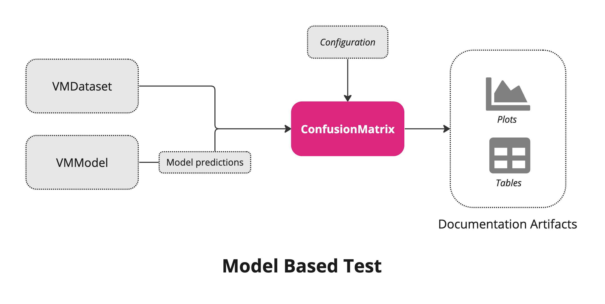

%pip install -q validmindIntroduction to ValidMind Dataset and Model Objects
When writing custom tests, it is essential to be aware of the interfaces of the ValidMind Dataset and ValidMind Model, which are used as input arguments.
As a model developer, writing custom tests is beneficial when the ValidMind library lacks a built-in test for your specific needs. For example, a model might require new tests to evaluate specific aspects of the model or dataset based on a particular use case.
This interactive notebook offers a detailed understanding of ValidMind objects and their use in writing custom tests. It introduces various interfaces provided by these objects and demonstrates how they can be leveraged to implement tests effortlessly.
Contents
About ValidMind
ValidMind is a suite of tools for managing model risk, including risk associated with AI and statistical models. You use the ValidMind Library to automate documentation and validation tests, and then use the ValidMind Platform to collaborate on model documentation. Together, these products simplify model risk management, facilitate compliance with regulations and institutional standards, and enhance collaboration between yourself and model validators.
Before you begin
This notebook assumes you have basic familiarity with Python, including an understanding of how functions work. If you are new to Python, you can still run the notebook but we recommend further familiarizing yourself with the language.
If you encounter errors due to missing modules in your Python environment, install the modules with pip install, and then re-run the notebook. For more help, refer to Installing Python Modules.
New to ValidMind?
If you haven’t already seen our Get started with the ValidMind Library, we recommend you explore the available resources for developers at some point. There, you can learn more about documenting models, find code samples, or read our developer reference.
For access to all features available in this notebook, create a free ValidMind account.
Signing up is FREE — Register with ValidMind
Signing up is FREE — Register with ValidMind
Key concepts
Here, we will focus on ValidMind dataset, ValidMind model and tests to use these objects to generate artefacts for the documentation.
Tests: A function contained in the ValidMind Library, designed to run a specific quantitative test on the dataset or model. Tests are the building blocks of ValidMind, used to evaluate and document models and datasets, and can be run individually or as part of a suite defined by your model documentation template.
Custom tests: Custom tests are functions that you define to evaluate your model or dataset. These functions can be registered via the ValidMind Library to be used with the ValidMind Platform.
Inputs: Objects to be evaluated and documented in the ValidMind Library. They can be any of the following:
- model: A single ValidMind model object that has been initialized in ValidMind with
vm.init_model(). - dataset: Single Validmind dataset object that has been initialized in ValidMind with
vm.init_dataset(). - models: A list of ValidMind models - usually this is used when you want to compare multiple models in your custom test.
- datasets: A list of ValidMind datasets - usually this is used when you want to compare multiple datasets in your custom test. See this example for more information.
Parameters: Additional arguments that can be passed when running a ValidMind test, used to pass additional information to a test, customize its behavior, or provide additional context.
Outputs: Tests can return elements like tables or plots. Tables may be a list of dictionaries (each representing a row) or a pandas DataFrame. Plots may be matplotlib or plotly figures.
Dataset based Test
The dataset based tests take VM dataset object(s) as inputs, test configuration as test parameters to produce Outputs as mentioned above.
Model based Test
 Similar to datasest based tests, the model based tests as an additional input that is VM model object. It allows to identify prediction values of a specific model in the dataset object.
Install the ValidMind Library
Please note the following recommended Python versions to use:
- Python 3.7 > x <= 3.11
To install the library:
Initialize the ValidMind Library
ValidMind generates a unique code snippet for each registered model to connect with your developer environment. You initialize the ValidMind Library with this code snippet, which ensures that your documentation and tests are uploaded to the correct model when you run the notebook.
Get your code snippet
In a browser, log in to ValidMind.
In the left sidebar, navigate to Model Inventory and click + Register Model.
Enter the model details and click Continue. (Need more help?)
For example, to register a model for use with this notebook, select:
- Documentation template:
Binary classification - Use case:
Marketing/Sales - Attrition/Churn Management
You can fill in other options according to your preference.
- Documentation template:
Go to Getting Started and click Copy snippet to clipboard.
Next, load your model identifier credentials from an .env file or replace the placeholder with your own code snippet:
# Load your model identifier credentials from an `.env` file
%load_ext dotenv
%dotenv .env
# Or replace with your code snippet
import validmind as vm
vm.init(
# api_host="...",
# api_key="...",
# api_secret="...",
# model="...",
)%matplotlib inline
import xgboost as xgbLoad the demo dataset
from validmind.datasets.classification import customer_churn as demo_dataset
raw_df = demo_dataset.load_data()Prepocess the raw dataset
train_df, validation_df, test_df = demo_dataset.preprocess(raw_df)Train a model for testing
We train a simple customer churn model for our test.
x_train = train_df.drop(demo_dataset.target_column, axis=1)
y_train = train_df[demo_dataset.target_column]
x_val = validation_df.drop(demo_dataset.target_column, axis=1)
y_val = validation_df[demo_dataset.target_column]
model = xgb.XGBClassifier(early_stopping_rounds=10)
model.set_params(
eval_metric=["error", "logloss", "auc"],
)
model.fit(
x_train,
y_train,
eval_set=[(x_val, y_val)],
verbose=False,
)Explore basic components of the ValidMind library
In this section, you will learn about the basic objects of the ValidMind library that are necessary to implement both custom and built-in tests. As explained above, these objects are: * VMDataset: The high level APIs can be found here * VMModel: The high level APIs can be found here
Let’s understand these objects and their interfaces step by step:
VMDataset Object
Initialize the ValidMind datasets
You can initialize a ValidMind dataset object using the init_dataset function from the ValidMind (vm) module.
The function wraps the dataset to create a ValidMind Dataset object so that you can write tests effectively using the common interface provided by the VM objects. This step is always necessary every time you want to connect a dataset to documentation and produce test results through ValidMind. You only need to do it one time per dataset.
This function takes a number of arguments. Some of the arguments are:
dataset— the raw dataset that you want to provide as input to testsinput_id- a unique identifier that allows tracking what inputs are used when running each individual testtarget_column— a required argument if tests require access to true values. This is the name of the target column in the dataset
The detailed list of the arguments can be found here
# vm_raw_dataset is now a VMDataset object that you can pass to any ValidMind test
vm_raw_dataset = vm.init_dataset(
dataset=raw_df,
input_id="raw_dataset",
target_column="Exited",
)Once you have a ValidMind dataset object (VMDataset), you can inspect its attributes and methods using the inspect_obj utility module. This module provides a list of available attributes and interfaces for use in tests. Understanding how to use VMDatasets is crucial for comprehending how a custom test functions.
from validmind.utils import inspect_obj
inspect_obj(vm_raw_dataset)Interfaces of the dataset object
DataFrame
vm_raw_dataset.dfFeature columns
vm_raw_dataset.feature_columnsTarget column
vm_raw_dataset.target_columnFeatures values
vm_raw_dataset.x_df()Target value
vm_raw_dataset.y_df()Numeric feature columns
vm_raw_dataset.feature_columns_numericCategorical feature columns
vm_raw_dataset.feature_columns_categoricalSimilarly, you can use all other interfaces of the VMDataset objects
Using VM Dataset object as arguments in custom tests
A custom test is simply a Python function that takes two types of arguments: inputs and params. The inputs are ValidMind objects (VMDataset, VMModel), and the params are additional parameters required for the underlying computation of the test. We will discuss both types of arguments in the following sections.
Let’s start with a custom test that requires only a ValidMind dataset object. In this example, we will check the balance of classes in the target column of the dataset:
- The custom test below requires a single argument of type
VMDataset(dataset). - The
my_custom_tests.ClassImbalanceis a unique test identifier that can be assigned using thevm.testdecorator functionality. This unique test ID will be used in the platform to load test results in the documentation. - The
dataset.target_columnanddataset.dfattributes of theVMDatasetobject are used in the test.
Other high-level APIs (attributes and methods) of the dataset object are listed here.
If you’ve gone through the Implement custom tests notebook, you should have a good understanding of how custom tests are implemented in details. If you haven’t, we recommend going through that notebook first.
from validmind.vm_models.dataset.dataset import VMDataset
import pandas as pd
@vm.test("my_custom_tests.ClassImbalance")
def class_imbalance(dataset):
# Can only run this test if we have a Dataset object
if not isinstance(dataset, VMDataset):
raise ValueError("ClassImbalance requires a validmind Dataset object")
if dataset.target_column is None:
print("Skipping class_imbalance test because no target column is defined")
return
# VMDataset object provides target_column attribute
target_column = dataset.target_column
# we can access pandas DataFrame using df attribute
imbalance_percentages = dataset.df[target_column].value_counts(
normalize=True
)
classes = list(imbalance_percentages.index)
percentages = list(imbalance_percentages.values * 100)
return pd.DataFrame({"Classes":classes, "Percentage": percentages})Run the test
Let’s run the test using the run_test method, which is part of the validmind.tests module. Here, we pass the dataset through the inputs. Similarly, you can pass datasets, model, or models as inputs if your custom test requires them. In this example below, we run the custom test my_custom_tests.ClassImbalance by passing the dataset through the inputs.
from validmind.tests import run_test
result = run_test(
test_id="my_custom_tests.ClassImbalance",
inputs={
"dataset": vm_raw_dataset
}
)You can move custom tests into separate modules in a folder. It allows you to take one-off tests and move them into an organized structure that makes it easier to manage, maintain and share them. We have provided a seperate notebook with detailed explaination here
Using VM Dataset object and parameters as arguments in custom tests
Simlilar to inputs, you can pass params to a custom test by providing a dictionary of parameters to the run_test() function. The parameters will override any default parameters set in the custom test definition. Note that the dataset is still passed as inputs. Let’s modify the class imbalance test so that it provides flexibility to normalize the results.
from validmind.vm_models.dataset.dataset import VMDataset
import pandas as pd
@vm.test("my_custom_tests.ClassImbalance")
def class_imbalance(dataset, normalize=True):
# Can only run this test if we have a Dataset object
if not isinstance(dataset, VMDataset):
raise ValueError("ClassImbalance requires a validmind Dataset object")
if dataset.target_column is None:
print("Skipping class_imbalance test because no target column is defined")
return
# VMDataset object provides target_column attribute
target_column = dataset.target_column
# we can access pandas DataFrame using df attribute
imbalance_percentages = dataset.df[target_column].value_counts(
normalize=normalize
)
classes = list(imbalance_percentages.index)
if normalize:
result = pd.DataFrame({"Classes":classes, "Percentage": list(imbalance_percentages.values*100)})
else:
result = pd.DataFrame({"Classes":classes, "Count": list(imbalance_percentages.values)})
return resultIn this example, the normalize parameter is set to False, so the class counts will not be normalized. You can change the value to True if you want the counts to be normalized. The results of the test will reflect this flexibility, allowing for different outputs based on the parameter passed.
Here, we have passed the dataset through the inputs and the normalize parameter using the params.
from validmind.tests import run_test
result = run_test(
test_id = "my_custom_tests.ClassImbalance",
inputs={"dataset": vm_raw_dataset},
params={"normalize": True},
)VMModel Object
Initialize ValidMind model object
Similar to ValidMind Dataset object, you can initialize a ValidMind Model object using the init_model function from the ValidMind (vm) module.
This function takes a number of arguments. Some of the arguments are:
model— the raw model that you want evaluateinput_id- a unique identifier that allows tracking what inputs are used when running each individual test
The detailed list of the arguments can be found here
vm_model = vm.init_model(
model=model,
input_id="xgb_model",
)Let’s inspect the methods and attributes of the model now:
inspect_obj(vm_model)Assign predictions to the datasets
We can now use the assign_predictions() method from the Dataset object to link existing predictions to any model. If no prediction values are passed, the method will compute predictions automatically:
vm_train_ds = vm.init_dataset(
input_id="train_dataset",
dataset=train_df,
type="generic",
target_column=demo_dataset.target_column,
)
vm_train_ds.assign_predictions(model=vm_model)You can see below, the extra prediction column (xgb_model_prediction) for the model (xgb_model) has been added in the dataset.
print(vm_train_ds)### Using VM Model and Dataset objects as arguments in Custom tests
We will now create a @vm.test wrapper that will allow you to create a reusable test. Note the following changes in the code below:
- The function
confusion_matrixtakes two argumentsdatasetandmodel. This is aVMDatasetandVMModelobject respectively.VMDatasetobjects allow you to access the dataset’s true (target) values by accessing the.yattribute.VMDatasetobjects allow you to access the predictions for a given model by accessing the.y_pred()method.
- The function docstring provides a description of what the test does. This will be displayed along with the result in this notebook as well as in the ValidMind Platform.
- The function body calculates the confusion matrix using the
sklearn.tests.confusion_matrixfunction as we just did above. - The function then returns the
ConfusionMatrixDisplay.figure_object - this is important as the ValidMind Library expects the output of the custom test to be a plot or a table. - The
@vm.testdecorator is doing the work of creating a wrapper around the function that will allow it to be run by the ValidMind Library. It also registers the test so it can be found by the IDmy_custom_tests.ConfusionMatrix(see the section below on how test IDs work in ValidMind and why this format is important)
Similarly, you can use the functinality provided by VMDataset and VMModel objects. You can refer our documentation page for all the avalialble APIs here
from sklearn import metrics
import matplotlib.pyplot as plt
@vm.test("my_custom_tests.ConfusionMatrix")
def confusion_matrix(dataset, model):
"""The confusion matrix is a table that is often used to describe the performance of a classification model on a set of data for which the true values are known.
The confusion matrix is a 2x2 table that contains 4 values:
- True Positive (TP): the number of correct positive predictions
- True Negative (TN): the number of correct negative predictions
- False Positive (FP): the number of incorrect positive predictions
- False Negative (FN): the number of incorrect negative predictions
The confusion matrix can be used to assess the holistic performance of a classification model by showing the accuracy, precision, recall, and F1 score of the model on a single figure.
"""
# we can retrieve traget value from dataset which is y attribute
y_true = dataset.y
# The prediction value of a specific model using y_pred method
y_pred = dataset.y_pred(model=model)
confusion_matrix = metrics.confusion_matrix(y_true, y_pred)
cm_display = metrics.ConfusionMatrixDisplay(
confusion_matrix=confusion_matrix, display_labels=[False, True]
)
cm_display.plot()
plt.close()
return cm_display.figure_ # return the figure object itselfHere, we run test using two inputs; dataset and model.
from validmind.tests import run_test
result = run_test(
test_id = "my_custom_tests.ConfusionMatrix",
inputs={
"dataset": vm_train_ds,
"model": vm_model,
}
)Log the test results
You can log any test result to the ValidMind Platform with the .log() method of the result object. This will allow you to add the result to the documentation.
You can now do the same for the confusion matrix results.
result.log()Where to go from here
In this notebook you have learned the end-to-end process to document a model with the ValidMind Library, running through some very common scenarios in a typical model development setting:
- Running out-of-the-box tests
- Documenting your model by adding evidence to model documentation
- Extending the capabilities of the ValidMind Library by implementing custom tests
- Ensuring that the documentation is complete by running all tests in the documentation template
As a next step, you can explore the following notebooks to get a deeper understanding on how the ValidMind Library allows you generate model documentation for any use case:
Use cases
More how-to guides and code samples
Discover more learning resources
All notebook samples can be found in the following directories of the ValidMind Library GitHub repository:
Upgrade ValidMind
After installing ValidMind, you’ll want to periodically make sure you are on the latest version to access any new features and other enhancements.
Retrieve the information for the currently installed version of ValidMind:
%pip show validmindIf the version returned is lower than the version indicated in our production open-source code, restart your notebook and run:
%pip install --upgrade validmindYou may need to restart your kernel after running the upgrade package for changes to be applied.